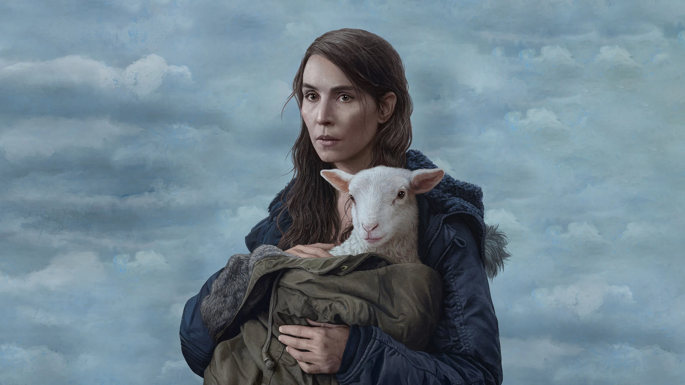

LAMB／ラム
Lamb
🔍 この映画の怖さまとめ
😱 びっくり度
★★★★★
🩸 グロ度
★★★★★
🧠 精神ダメージ
★★★★★
🐾 動物の安否
⚠️ 注意
🎯 結論：静かなのにずっと不穏。"世界のルールがズレている感覚"が続く雰囲気ホラー。かわいさで油断すると最後に心を持っていかれる。
恐怖の性質（ネタバレなし）
この映画の怖さはいくつかの要素が組み合わさっています。それぞれを事前に知っておくことで、心の準備ができます。
びっくり度
★★★★★
急に脅かしてくるホラーではほぼない。暗転ドーン！も爆音ジャンプスケアもかなり少なめ。その代わり、ずっと「何かがおかしい」が続く。静かなアイスランドの農場、雪、霧、無音、羊の鳴き声。画面は穏やかなのに空気だけがずっと不穏。「怖いことが起きてる」というより、"世界のルールが少しズレている感じ"が延々と続くタイプ。
グロ度
★★★★★
直接的なゴア描写はかなり控えめ。血しぶき映画を想像すると拍子抜けするくらい静か。ただし動物の出産描写・死体描写・銃によるショック演出など、"リアル寄りの嫌さ"は少しある。アダちゃんは本当にかわいい。でも「かわいい」と「不穏」が同時に存在していて、そこがずっと気持ち悪い。
精神ダメージ
★★★★★
この映画の本当の怖さはここ。"喪失を抱えた人間が壊れていく静けさ"を見せ続ける。説明も少なく、感情も多く語られない。だから逆に観ている側がずっと考えてしまう。「これって受け入れていいの？」「この幸せ、本当に成立してるの？」という違和感がじわじわ積み重なる。かわいさで油断すると最後に心を持っていかれる。
日常侵食度
★★★★★
かなり高め。静かな田舎、夜の窓、霧の山道、羊の鳴き声。この辺がしばらく不穏に感じるタイプ。"説明されない恐怖"が苦手な人は、あとから効いてくる。
🐾 動物の安否（重要）
⚠️ 注意
羊・犬など動物がかなり多く登場します。直接的にキツい虐待映画ではないですが、動物の死やショッキングな描写があります。動物に感情移入しやすい方は注意してください。
🛡️ ビビリ攻略ガイド
これを知っておけば少し楽に観られます。タイムスタンプ付きで危険ポイントをご案内。
モトジロウのひとこと感想

「"怖い"っていうか、"この幸せ大丈夫…？"ってずっとソワソワする映画だった…。アダちゃんかわいすぎるのに、空気がずっと不穏なんだよね…。」
【ラスト】マリアの夫イングヴァルは、山にいた羊人間のような存在に撃たれて死亡。アダはその存在に連れ去られてしまう。最後、マリアだけが取り残される。
【真相】明確な説明は最後までない。アダは人間と羊の異形存在であり、自然や動物側からの"奪い返し"、子どもを失った夫婦の執着、などを象徴的に描いていると解釈されることが多い。
【生存情報】マリアは生存。イングヴァルは死亡。アダは連れ去られる。
【後味】かなり苦い。絶望エンドというより「最初から壊れた幸福だった」と気づかされるタイプ。静かな映画なのに、ラストの破壊力が重い。
向いてる人 / 向いてない人
✅ こんな人におすすめ
- ジャンプスケアが苦手な人
- A24系の"雰囲気ホラー"が好きな人
- 考察映画が好きな人
- 静かな不穏さを味わいたい人
❌ こんな人は注意
- わかりやすい恐怖が欲しい人
- テンポ重視の人
- 明確な説明がないとモヤモヤする人
- 後味スッキリ作品を求める人
作品情報
| タイトル | LAMB／ラム（Lamb） |
|---|---|
| 公開年 | 2021年 |
| 監督 | ヴァルディミール・ヨハンソン |
| 主演 | ノオミ・ラパス |
| 制作国 | アイスランド／スウェーデン／ポーランド |
| 上映時間 | 106分 |